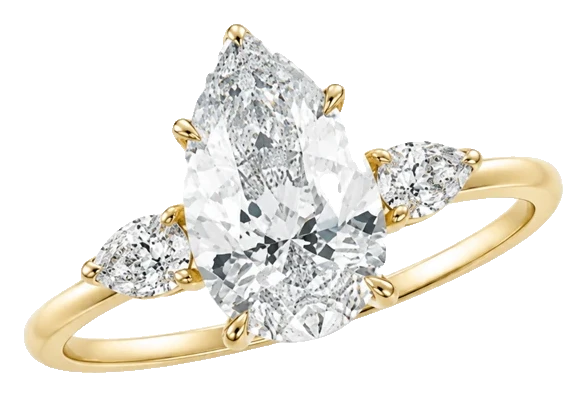
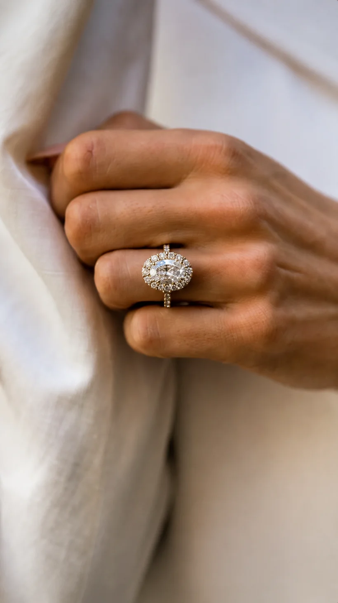
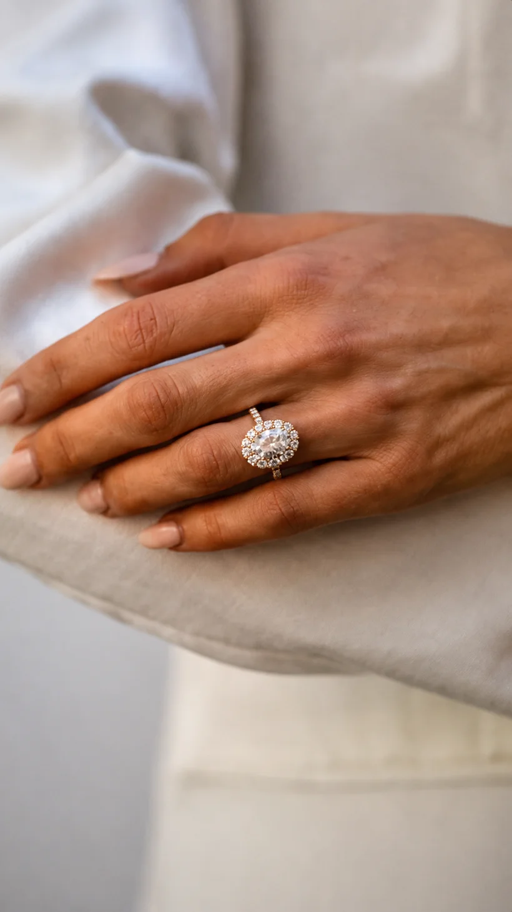
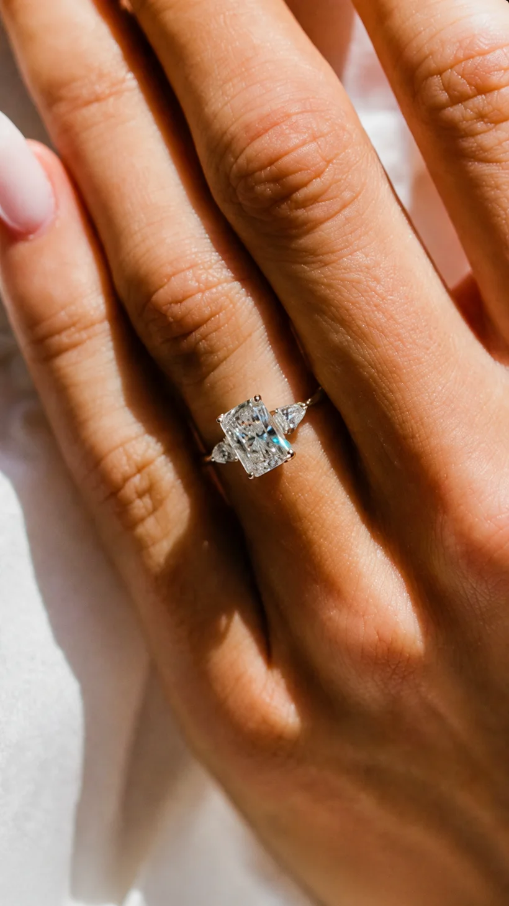
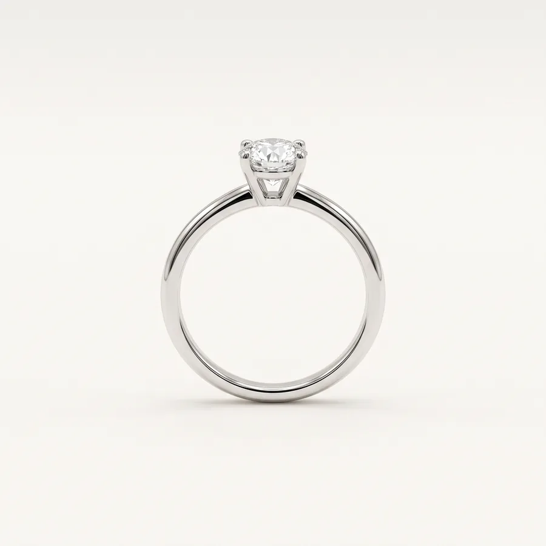
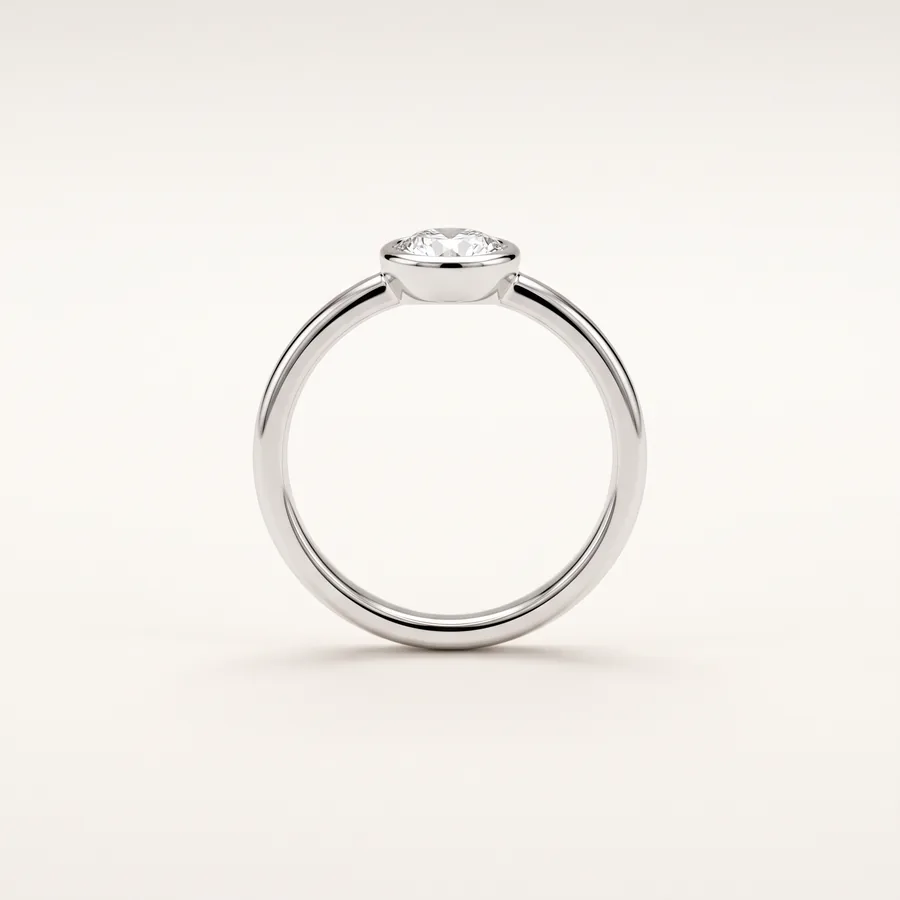
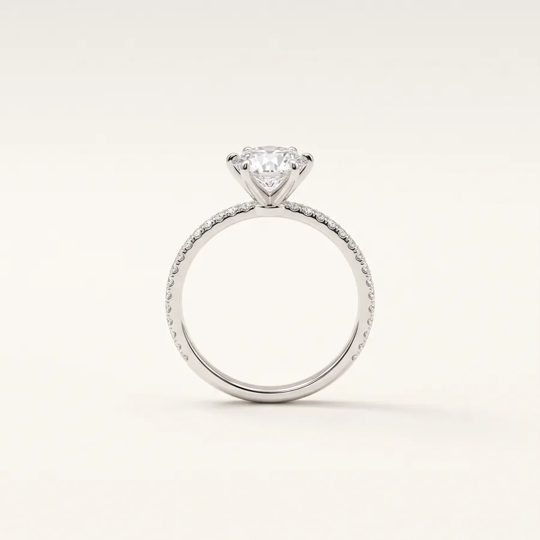
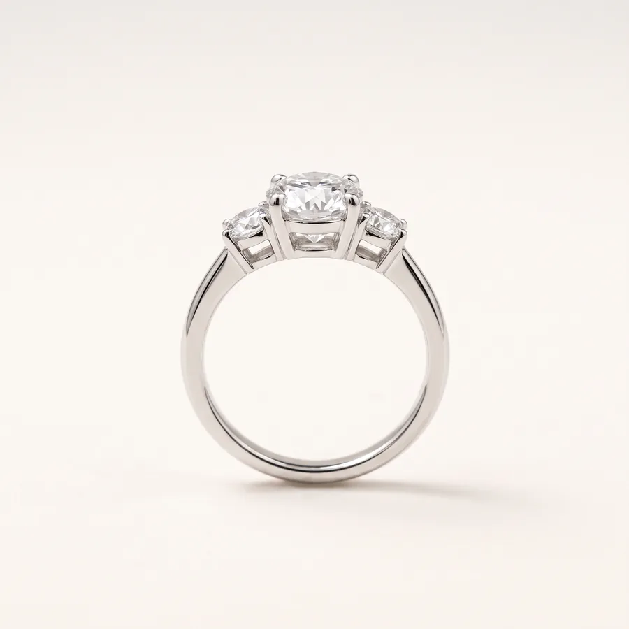
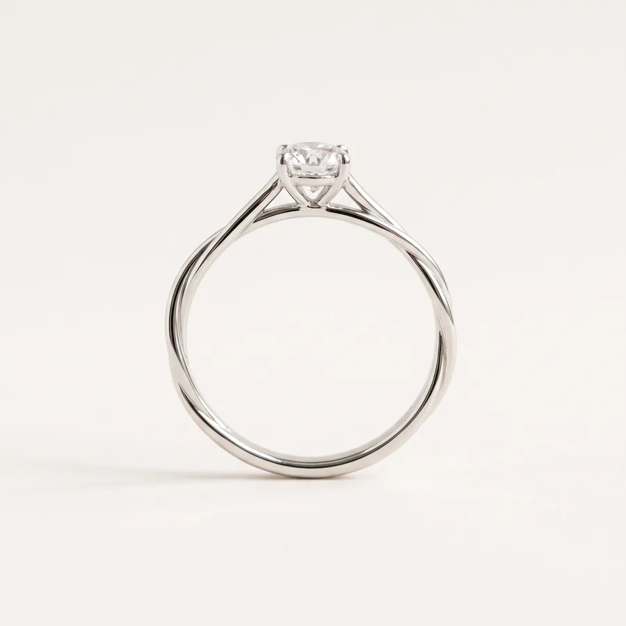

Der Tropfen
Ein Diamant im Tropfenschliff, flankiert von zwei feinen Beisteinen. Klassisch in der Linie, unverwechselbar in der Wirkung.
Der wichtigste Ring Ihres Lebens sollte nicht zwischen Tür und Angel entstehen. In der Wellritzstraße nehmen wir uns die Zeit, die dieser Moment verdient.

Ein Ring lebt am Finger, nicht in der Vitrine. Erst an der Hand zeigt sich, ob Fassung, Höhe und Goldton wirklich zu Ihnen passen.

Oval- und Tropfenschliff fangen das Licht anders als ein runder Brillant. Bei uns drehen Sie den Ring in Ruhe, bis er sitzt.

Der schönste Ring ist der, den Sie nicht mehr abnehmen möchten. Wir achten mit Ihnen darauf, dass er auch im Alltag angenehm zu tragen bleibt.
Keine davon müssen Sie vorher beantworten – wir gehen sie gemeinsam durch, wenn Sie bei uns sind.
Ob Brillant, Oval oder Smaragdschliff: Größe, Schliff und Farbe verändern die Wirkung eines Rings völlig. Wir zeigen Ihnen die Unterschiede nebeneinander.
Solitär, Trilogie oder Halo – die Fassung entscheidet, wie viel Licht der Stein bekommt und wie kräftig der Ring an der Hand wirkt.
Gelb-, Weiß- oder Rotgold in 585 oder 750. Der Ton sollte zu Ihrem übrigen Schmuck passen – und zu dem, was Sie täglich tragen.
Ein Datum, zwei Namen, ein kurzes Wort im Ringinneren. Auch später noch, wenn der Ring längst getragen wird.
Alle Fassungen sind in 585er und 750er Gelb-, Weiß- und Rotgold möglich – mit dem Stein Ihrer Wahl. Sprechen Sie uns an, wir stellen Ihren Ring zusammen.
Der Goldton verändert einen Ring mehr, als die meisten erwarten. Schalten Sie um – alle fünf Fassungen wechseln mit.





Jede Fassung fertigen wir in 585er oder 750er Gold – mit dem Stein, den Sie bei uns aussuchen. Die Abbildungen zeigen die Form, nicht den Bestand.
Ohne Termin, ohne Verpflichtung. Wenn Sie es diskret möchten, rufen Sie kurz an – dann halten wir Ihnen eine ruhige Ecke frei.